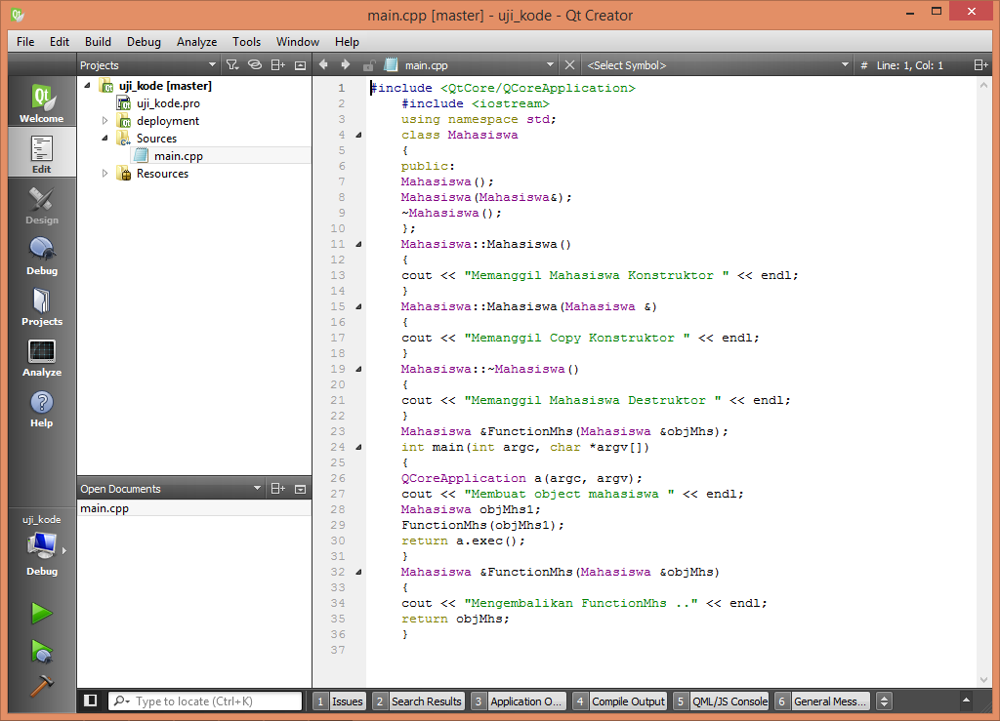
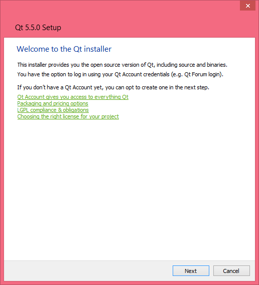
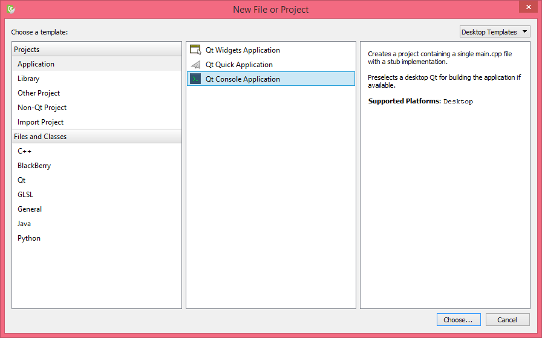
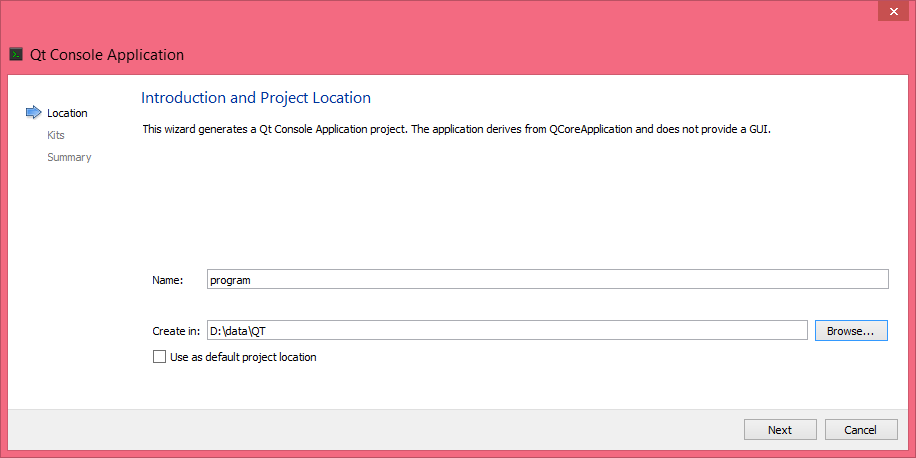

[halaman-web-download-qt]
[halaman-web-download-qt]Agenda
Pada chapter ini kita akan membahas mengenai bahasa C dan Qt Cretor seperi berikut ini
Bahasa C merupakan bahasa pemrograman tingkat menengah. Pada tahun 1972 bahasa C pertama kali dirancang oleh Dennis M Ritchie1Dennis M Ritchie di Bell aboratories. Kemudian tahun 1978 Dennis dan Brian W. Kernighan2Brian W. Kernighan mempublikasikan bahasa C melalui The C Programming Language3 sehingga bahasa C dikenal banyak orang. Selanjutnya pada tahun 1989, akhirnya bahasa C distandardisasi ANSI4 (American National Standard Institute) sehingga bahasa C menjadi bahasa pemrograman standar hingga saat ini dan bisa dibuat kompilernya pada beberapa platform yang berbeda-beda.
Bahasa C dikatakan sebagai bahasa pemrograman terstruktur, fungsional karena strukturnya menggunakan fungsi-fungsi sebagai program-program bagian (subroutine/ module). Fungsifungsi selain fungsi utama disebut subroutine/ module dan ditulis setelah fungsi utama (main) atau diletakkan pada file pustaka (library). Jika fungsi-fungsi diletakkan pada file pustaka dan akan dipakai disuatu program, maka nama file header-nya harus dilibatkan dalam program menggunakan preprocessor directive #include.
Kemudian bahasa C dikembangkan oleh Bjarne Stroustrup at Bell Labs menjadi bahasa C++. Pada bulan Oktober 1985 munculah buku The C++ Programming Language yang membahas tentang bahasa pemrograman itu langsung dari penciptanya sendiri. Bahasa C++ mengalami dua tahap evolusi.
Pertama, dirilis oleh AT&T Laboratories5, dinamakan cfront6. C++ versi ini hanya berupa kompiler yang menterjemahkan bahasa C++ menjadi bahasa C untuk dieksekusi
Kedua, Borland International Inc7. mengembangkan kompiler C++ menjadi sebuah kompiler yang mampu mengubah C++ langsung menjadi bahasa mesin (assembly). Tahun1990, C++ mulai diarahkan ke pengembangan Pemrograman Berorientasi Obyek8.
Beberapa keunggulan C++ dibandingkan dengan bahasa C adalah sebagai berikut.
Bahasa pemrograman ini sangat mendukung pemrograman berorientasi obyek yang melihat permasalahan secara obyek dan bukan prosedural.
Kita dapat mengkompilasi C++ kode yang sama di hampir semua jenis komputer dan sistem operasi tanpa membuat perubahan apapun. C++ adalah bahasa pemrograman yang paling sering digunakan di dunia.
Karena bahasa C++ merupakan bahasa tingkat tinggi, maka bahasa yang ditulis dengan bahasa C++ termasuk ringkas dan pendek dibandingkan bahasa-bahasa sejamannya pada waktu itu.Bahasa C++ termasuk bahasa pemrograman tua yang sudah mendukung berbagai macam kata kunci yang mampu menyingkat proses penulisan kode program.
Tubuh program pada bahasa C++ dapat terdiri dari beberapa file source code yang disusun secara terpisah dan kemudian dihubungkan secara bersama-sama. Kemampuan ini jelas menghemat waktu karena tidak perlu mengkompilasi ulang aplikasi yang lengkap ketika membuat satu perubahan, tetapi hanya file yang berisi perubahan itu saja. Selain itu, karakteristik ini memungkinkan kita untuk menghubungkan kode C++ dengan kode yang dibuat oleh bahasa lain, seperti bahasa Assembly dan C dan dapat digunakan kembali (reuseable).
C++ sangat backward compatible dengan bahasa C, sehingga aplikasi / kode program yang ditulis dengan bahasa C dapat digabungkan dengan bahasa C++ dengan sangat mudah, bahkan hampir tidak perlu mengubah kodenya.
Kode yang dihasilkan dari kompilasi C++ sangat efisien, karena C++ mendukung prinsip dualitas bahwa dia mendukung bahasa tingkat tinggi dan bahasa tingkat rendah sehingga dapat mengurangi ukuran hasil kompiliasi dari bahasa itu.
Qt Creator merupakan cross-platform C++ integrated development environment yang merupakan bagian dari Qt SDK . Qt Creator mempunyai debugger dalam bentuk visual dan layout GUI serta tempat perancangan form. Teks editornya mempunyai fasilitas syntax highlighting dan autocompletion. Qt Creator menggunakan compiler C++ dari kumpulan compiler GNU pada Linux dan FreeBSD. Pada Windows Qt Creator dapat menggunakan MinGW10 atau MSVC11 yang sudah build-in di dalam install.
Project Qt Creator menggunakan format cross platform project (.pro) untuk mengizinkan tim developer untuk share project yang mempunyai platform-platform yang berbeda-beda dan menggunakan common tool untuk implementasi dan debugging program. Sebuah project dapat meliputi:
file-file yang digroup secara bersama-sama, langkah-langkah build program, form-form dan file-file resource, dan pengaturan untuk menjalankan aplikasi.
Projek dapat dibuat secara manual atau diimport dari file projek yang sudah ada. Jika projeknya dibuat secara manual, maka sebuah file-file akan digenerate oleh Qt Creator, tergantung dari tipe file yang dimiliki. Seperti Jika filenya adalah sebuah GUI application, maka Qt Creator men-generate sebuah file kosong yang berektensikan .ui yang akan imodifikasikan melalui Qt Designer. Qt Creator diinterrasikan dengan sistem cross-platform untuk mem-build secara automatis: qmaka dan CMake . Projek yang tidak menggunakan qmake atau CMake dapat diimport-kan, dan Qt Creator dapat meng-ignore sistem build.
Projek pada Qt Creator
[projek-pada-qt-creator]
Editor Qt Creator mempunyai sebuah code editor yang telah terintegrasi dengan Qt Designer untuk mendesain dan membangun aplikasi GUI dari Qt widgets. Karena Qt Creator adalah sebuah Integrated Development Enviroment (IDE), maka Qt Creator memisahkan antara text editor untuk build dan editor untuk menjalankan (run) aplikasi-aplikasi. Qt Creator bukan hanya bisa membaca text file biasa, akan tetapi juga bisa membaca file C++ dan bahasa QML .
Keunggulan Code Editor Qt Creator
Dapat menulis code dengan format yang benar.
Mengantisipasikan apa yang akan programer tulis dan code yang komplit.
Menampilkan baris-baris yang error dan pesan-pesan warning.
Memandu programer secara semantik untuk menulis classes, functions, dan symbols.
Menyediakan fasilitas bantuan context-sensitive pada classes, functions, dan symbols.
Me-rename symbol-symbol dengan langkah intelligent, sehingga simbol-simbol yang lain dengan nama yang sama tidak ter-rename.
Menampilkan lokasi function, class yang dideklarasikan atau yang dipanggil
 [code-editor]
Qt Creator menyajikan dua buah editor visual: Qt Designer dan Qt Quick Designer. Qt Designer merupakan sebuah tool untuk mendesain dan membangun aplikasi GUI dari Qt widgets. Widgets dan forms yang dibentuk dengan Qt Designer terintegrasi dengan code program, Qt signals dan mekanisme slots, sehingga kita dengan mudah memberikan nilai-nilai dan properti-properti pada pada elemen-elemen grafik. Semua properti-properti yang diatur pada Qt Designer dapat diubah secara dinamik melalui/di dalam code.
Qt Quick Designer digunakan untuk membangun secara mudah animasi-animasi dengan menggunakan sebuah bahasa pemograman yang dikenal dengan Qt Meta-Object Language (QML)12. Dalam QML, sebuah user interface dispesifikasikan sebagai sebuah pohon (tree) dari objects dengan properti-properti. Kamu menggunaan teks editor visual untuk menciptakan items, screens, dan aplikasi, serta mendefinisikan perubahan action-acton pada komponennya. Dapat digunakan Qt atau JavaScript untuk mengimplementasikan logik aplikasi.
Gambar UI Designers
[gambar-ui-designers]
Anda dapat menggunakan code editor menulis code dalam Qt C++ atau bahasa pemograman QML, javascript bahkan HTML5. Syntax highlighting juga disajikan untuk banyak bahasa pemograman yang lain.
Qt Creator men-support untuk membangun dan menjalankan aplikasi-aplikasi Qt untuk desktop environments (Seperti Windows, Linux, FreeBSD dan Mac OS) Selain itu juga bisa dijalankan pada mobile devices (seperti Android, windows 8 dan iOS). Ketika sebuah aplikasi dibangun untuk mobile device yang bisa mengkoneksi ke Personal Computer (PC), maka Qt Creator men-generate sebuah package instalasi, menginstall package tersebut pada device, dan meneksekusikannya.
Qt Creator diintegrasikan dengan kumpulan tool-tool yang bermanfaat dan membantu, seperti version control systems dan Qt Simulator. Qt Creator menggunakan command line client version control system untuk mengakses repositories (Git13, subversion14, Perfoce15, CVS16, Mercurial17).
Qt Creator tidak mempunyai debugger. Qt Creator mempunyai plugin debugger yang bekerja sebagai interface antara Qt Creator core dan external native debuggers
Debuggers adalah:
GNU Symbolic Debugger (gdb)
Microsoft Console Debugger (CDB)
internal Java Script debugger
Dapat menghubungkan mobile devices dengan PC dan memproses debug yang berjalan pada devices.
Interaksi antara pengguna dengan logic software dinamakan User Interface disingkat dengan UI. UI ini berwujud bisa sebuah window, bisa tombol, bisa sebuah textarea dan lain sebagainya. Inilah komponen User Interface. Sebagai seorang programmer (pembuat program aplikasi), terlebih programmer yang menggunakan Qt, maka anda akan disediakan beragam UI yang bisa anda pilih sesuai kebutuhan. Ada QtWitget, QtQuick dan QtWebKit. Ketiganya dapat anda pilih sesuai kebutuhan sebagai UI progam anda. Ingin tahu bedanya? Mari kita simak.
Sama seperti Visual Studio yang menyediakan beragam Amazing User Interface tingkat tinggi sampai pengguna bingung memilihnya, Qt menyediakan tiga UI yang dapat kita gunakan. Anda pun bisa menggabungkan ketiganya. :)
Qt Creator, sebuah Editor Qt adalah contoh dari perpaduan multiple teknologi UI ini. Coba amati Qt Creator yang selalu anda gunakan tersebut.
Qt Creator menggunakan teknologi QtWidget sebagai User Interface pada menu dan kotak dialog nya. Coba perhatikan kembali Welcome Screen dari Qt Creator, lihat, tampilannya berbeda bukan, bahkan button nya sangat berbeda dan tidak biasa, ini karena UI untuk Welcome Screen menggunakan teknologi QtQuick. Lalu dimana letak penggunaan QtWebkit?
Yup, perhatikan Help Documentation nya, wow, ini seperti halaman web yang menyatu dengan softwarenya bukan? Ya, teknologi QtWebKit digunakan dalam pembangunan Help Documentation ini.
QtQuick merupakan salah satu Teknologi UI dari Qt yang menggunakan QML dan JavaScript sebagai penyusun UI nya.Mirip seperti XAML yang dikembangkan Microsoft , QML merupakan teknologi binding dari Qt yang memfasilitasi pengguna dengan visual canvas dan rendering engine nya. Teknologi UI ini sangat cocok sekali untuk Hardware Acceleration seperti OpenGL pada VGA driver kita.
Jangan salah, bila anda menggunakan QtQuick versi 2, maka memang butuh OpenGL yang disuport oleh VGA anda. OpenGL sekarang begitu terkenal, banyak games - games yang mulai menargetkan OpenGL karena begitu flexibel dan mudah. Tapi sayangnya, OpenGL ini tidak terdapat pada VGA driver bawaan OS.
Jadi jangan heran, saat anda install ulang komputer (bahkan Windows 8.1 sekalipun) anda akan menemukan bahwa tidak ada OpenGL pada VGA driver anda. Cara terbaik adalah periksa Motherboard anda dan cari driver VGA yang sesuai dengan Motherboard anda. Biasanya gratis.
Animation, Transition, Visual Effect, Shader Effect dan lain – lain merupakan fasilitas yang dapat anda kembangkan saat menggunakan QtQuick sebagai User Interface (UI) aplikasi anda.
QtWidget merupakan tradisional User Interface element yang biasanya terdapat dalam dekstop environment. Bila anda pengguna linux, maka UI ini merupakan bagian dari KDE. Tapi jangan salah, QtWidget sangat dinamis untuk Windows dan Mac OS. Sehingga bila anda menggunakan QtWidget sebagai UI anda maka tampilannya mirip sekali dengan UI pada OS anda.
Bila anda pengguna Windows 8.1 seperti saya dengan Amazing Flat Designnya, maka QtWidget ini menyesuaikan dengan UI OS.
Semua standar komponen untuk aplikasi seperti button, textarea, menu dan lain – lain terdapat pada QtWidget ini. Sehingga sangat cocok sekali untuk anda yang gemar membuat aplikasi tradisional standar.
Bila kita membuat aplikasi dengan QtWidget, maka saat memulai project, akan muncul pemilihan Base Class, ada tiga yaitu Class QWidget, Class QMainWindow, dan Class Qdialog.
Perbedaan dari ketiga Base Class di atas adalah berikut ini:
*QWidget merupakan base class untuk semua GUI element pada QtWidget User Interface. Coba lah explorasi dan bedakan ketiganya :)
*QDialog merupakan sebuah window yang biasanya digunakan untuk mengejutkan pengguna, seperti saat window dialog muncul ketika pengguna harus memasukan input dengan benar atau hal – hal yang lain, tampilan dari Qdialog tidak berbeda dengan Qwidget, anda bisa menggunakan salah satu.
*QMainWindow, nah, ini adalah sebuah class yang sangat unik, karena menggunakan feature built in yang sangat populer seperti status bar, toolbar, dan menu bar. Cobalah membuat applikasi QtWidget dengan QmainWindow sebagai base class nya, pasti secara otomatis akan ditampilan menubar , toolbar, dan statusbar.
Tahukah anda bahwa web programing adalah kegiatan yang paling berkembang di dunia saat ini? Tahukah anda bahwa web koding seperti html, css, js sangat populer dan mudah digunakan dan mulai merambah ke teknologi desktop seperti Html518 dan CSS319?
Lalu kenapa tidak digunakan dalam pemrograman desktop? Ya, dengan menggunakan User Interface QtWebkit20 ini anda bisa membuat sebuah desktop21 application dengan menggunakan koding web. Unik bukan?
Teknologi QtWebkit menampilkan web content melalui QML, sedangkan C++ API digunakan untuk interaksi dengan web content tersebut.
Perlu diperhatikan bersama bahwa pemilihan teknologi adalah biasa, so, tetaplah berkreasi, berikut kita kutipkan beberapa perbandingan antar tiga teknologi UI dari Qt Help Documentation.
Pada tutorial ini kita akan menginstall Qt pada ubuntu 14.04 atau Windows 8 dengan menggunakan versi terbaru dari Qt Creator yang dapat di unduh di halaman22 Qt cCreator.
[halaman-web-download-qt]
Kunjungi website Qt untuk mendowload Qt Crator sesui dengan versi sisem operasi yang di gunakan baik itu 64-bit atau 32 bit. atau juga dapat di download dengan menggunakan command line di linux dengan mengetikan.
Contoh:
wget http://download.qt.io/official_releases/online_installers/qt-unified-linux-x86-online.runjika menggunakan sistem operasi beberbasis 64 bit
wget http://download.qt.io/official_releases/qt/5.6/5.6.0/qt-opensource-linux-x64-5.6.0.runAtur permisi, jalankan installer dan ikuti perintah berikut ini untuk mnginstall Qt Creator secara lengkap.
chmod +x qt-opensource-linux-x64-5.6.0.run
./qt-opensource-linux-x64-5.6.0.runBuka terminal untuk menginstal g++:
sudo apt-get install build-essentialBuka Qt Creator klik tool > Options. Klik build & run dan pilih tab Kit. Konfigurasikan kompiler jka belum terdeteksi secara otomatis.
Jalankan Perintah berikut ini mengintall Pustaka OpenGL:
sudo apt-get install mesa-common-devAnda dapat mendownlod Qt creator di halaman websitenya seperti gambar [halaman-web-download-qt] dan memlilih versi dari Aplikasi yang Anda butuhkan baik 64 bit atau 32 bit. Sesuikan dengan sistem operasi yang Anda miliki.
Jika Anda telah mendownlaod Qt creator maka qt-opensource-windows-x86-mingw492-5.5.0.exe. Disini penulis menggunakan versi 32 bit jika sistem oeprasi Anda 64 bit maka gunakanlah 64 bit walaupun dapat menggunakan versi 32 bit.

Pilih Next dan akan muncul halaman Qt Acount jika anda tidak ingin mendatarkan diri dapat di lewati dengan memilih skip.

Masuk ke halaman Setup terus next saja.

Installer akan menginstall aplikasi sampai selesai apabila telah selesai maka klik finish untuk mengakhiri proses pemasangan aplikasi.

Untuk mencoba membuat aplikasi dengan Qt Creator maka kita perlu dengan membuat menu file > new Project dan pilih project aplication > Qt console aplication

kemudian beri nama dengan Program yang akan kita buat dan direktori tempat aplikasi yang kita buat.

Klik Next, kemudian pilih compiler yang akan kita gunakan. Disini penulis menggunakan MinGW sebagai compilernya.
Tips
Simulator atau compiler yang lengkap teridir dari
Qt Simulator MingGW 4.4
Qt Simulator VS 2008, 2010, 2011, 2012 2013, 2014
Android SDK dan NDK

Kemudian pilih jenis sub version yang akan kita gunakan, jika Anda tidak mengunakan sub version maka pilih none pada add to subversion.

Langkah 1 Setup Qt Creator
Apabila di lakukan dengan benar maka akan muncul Qt Editor sebagai berikut ini.

Program Bahasa C/C++ tidak mengenal aturan penulisan di kolom/baris tertentu, jadi bisa dimulai dari kolom/baris manapun. Namun demikian, untuk mempermudah pembacaan program dan untukkeperluan dokumentasi, sebaiknya penulisan program di bahasa C/C++ diatur sedemikian rupa sehingga mudah dan enak dibaca. Berikut adalah struktur dasar program yang dibuat dengan bahasa C++:
#include <header>
using namespace std;
int main(int argc, char *argv[])
{
deklarasi variabel;
deklarasi konstanta;
perintah perintah;
//komentar
return 0;
} Penjelasan :
#include adalah salah satu pengarah preprocessor directive yang tersedia pada C++. Preprocessor selalu dijalankan terlebih dahulu pada saat proses kompilasi terjadi. Bentuk umumnya:
# include <nama_file>Bagian tersebut tidak diakhiri dengan tanda semicolon, karena bentuk tersebut bukanlah suatu bentuk pernyataan, tetapi merupakan preprocessor directive. Baris tersebut menginstruksikan kepada kompiler untuk menyisipkan file lain dalam hal ini file yang berakhiran .h (file header) yaitu file yang berisi C++ standard library. Pada C++ ekstensi .h tidak dituliskan.
Beberap contoh pengikutsertaan berkas adalah:
#include <iostream> : diperlukan pada program yang melibatkan objek cout dan cin
#include <conio>: diperlukan bila melibatkan clrscr(), yaitu perintah untuk membersihkan layar dan fungsi getch() untuk menerima sembarang input keyboard dari user.
#include <iomanip> : diperlukan bila melibatkan setw() yang bermanfaat untuk mengatur lebar dari suatu tampilan data.
#include <math> : diperlukan pada program yang menggunakan operasi sqrt() yang bermanfaat untuk operasi matematika kuadrat.
Semua elemen standard C++ library dinyatakan dalam apa yang disebut namespace, namespace tersebut bernama std. Jadi artinya untuk mengakses semua fungsionalitas std kita menuliskan bahwa kita menggunakan namespace std.
Program C++ terdiri dari satu atau lebih fungsi, dan di antara salah satunya harus ada fungsi main dan hanya boleh ada satu main pada tiap program C++. Setiap program C++ akan dan pasti akan memulai eksekusi programnya pada fungsi main ini, meskipun main bukan fungsi yang pertama ditulis di program. Melihat bentuk seperti itu dapat kita ambil kesimpulan bahwa batang tubuh program utama berada didalam fungsi main(). Berarti dalam setiap pembuatan program utama, maka dapat dipastikan seorangpemrogram menggunakan minimal sebuah fungsi.
Tanda { dan pada akhir program terdapat tanda }. Tanda { harus ada pada setiap awal dari sebuah fungsi dan tentu saja harus diakhiri dengan tanda }. Tanda ini digunakan untuk menunjukkan cakupan(scope) dari sebuah fungsi,dimana untukmenunjukkan fungsi ini dimulai danberakhir.
Komentar tidak pernah dicompile oleh compiler. Dalam C++ terdapat 2 jenis komentar, yaitu:
/* Komentar anda diletakkan
di dalam ini bisa mengapit
lebih dari satu baris */
// Komentar anda diletakkan disini
// ( hanya bisa sebaris )Programmer sering sekali memasukkan komentar di dalam code agar program lebih mudah dibaca. Komentar juga membantu orang lain untuk membaca dan mengerti isi dari code. Komentar tidak menyebabkan komputer melakukan suatu instruksi ketika program dijalankan.
Tanda semicolon “ ; ” digunakan untuk mengakhiri sebuah pernyataan. Setiap pernyataan harus diakhiri dengan sebuah tanda semicolon.
Pernyataan return menyebabkan fungsi utama untuk menyelesaikan kegiatannya lalu mengembalikanhasil dari fungsi utama. Kode kembalian biasanya angka 0 atau 1. Jika angka yang dikembalikan 0 berartiprogram berakhir dengan tidak ada error, sedangkan jika 1 maka program berakhir dengan error.
Untuk lebih jelasnya silahkan coba ketik program berikut pada project baru.
#include <QtCore/QCoreApplication>
#include <iostream>
using namespace std;
int main (int argc, char *argv [])
{
QCoreApplication a (argc, argv);
cout<<"Hello World"<<endl;
cout<<"Selamat Belajar C/C++ ";
cout<<"enter my World";
return a.exec ();
}Kemudian jalankan dengan menekan tombol Run (CTRL + R)
Hello world Selamat belajar C/C++ enter my world
Tampilan Hello World diakhiri dengan tanda enter baru kemudian dilanjutkan dengan tulisan berikutnya yaitu Selamat Belajar C/C++ enter my World. Artinya perintah endl merupakan perintah untuk memberi tanda enter. Sedangkan untuk tulisan Selamat Belajar C/C++ dan tulisan enter my World yang pada source code terpisah dengan perintah cout, pada tampilan hasil program tetap sama dan tidak ada enter diantaranya. Hal ini karena tidak ada perintah untuk menampilkan enter diantara kedua kalimat tersebut. Penulisan pada kode tidak akan mempengaruhi hasil output program.
https://id.wikipedia.org/wiki/Dennis_Ritchie↩
https://id.wikipedia.org/wiki/Brian_Kernighan↩
https://id.wikipedia.org/wiki/The_C_Programming_Language↩
https://id.wikipedia.org/wiki/ANSI_C↩
Bell Laboratories (juga dikenal dengan nama Bell Labs dan sebelumnya dengan nama AT&T Bell Laboratories dan Bell Telephone Laboratories) adalah bagian dari organisasi riset dan pengembangan dari Alcatel-Lucent dan sebelumnya dari United States Bell System.↩
https://en.wikipedia.org/wiki/Cfront↩
Borland Software Corporation adalah sebuah perusahaan perangkat lunak komputer yang berkantor pusat di Austin, Texas. Perusahaan ini didirikan pada tahun 1983 oleh Niels Jensen, Ole Henriksen, Mogens Glad dan Philippe Kahn.↩
OOP (Object Oriented Programming) adalah suatu metode pemrograman yang berorientasi kepada objek. Tujuan dari OOP diciptakan adalah untuk mempermudah pengembangan program dengan cara mengikuti model yang telah ada di kehidupan sehari-hari.↩
pemrograman modular adalah mengelompokkan fungsi-fungsi utama kedalam sebuah modul, dimana tiap-tiap modul memiliki datanya masing-masing dan mampu mengolah datanya sendiri. Modul-modul ini yang akan digunakan dalam program.↩
minGW adalah salah satu aplikasi yng digunakan untuk mengkompile bahasa C agar dapat dipahami oleh bahasa mesin (asembler) pada komputer. Aplikasi ini dapat di unduh secara gratis.↩
sebuah perangkat lunak lengkap (suite) yang dapat digunakan untuk melakukan pengembangan aplikasi, baik itu aplikasi bisnis, aplikasi personal, ataupun komponen aplikasinya, dalam bentuk aplikasi console, aplikasi Windows, ataupun aplikasi Web. Visual Studio mencakup kompiler, SDK, Integrated Development Environment (IDE), dan dokumentasi (umumnya berupa MSDN Library). Kompiler yang dimasukkan ke dalam paket Visual Studio antara lain Visual C++, Visual C#, Visual Basic, Visual Basic .NET, Visual InterDev, Visual J++, Visual J#, Visual FoxPro, dan Visual SourceSafe.↩
https://en.wikipedia.org/wiki/QML↩
Git adalah tools yang berfungsi sebagai Version Control System (VCS) dan kalau diartikan ke bahasa kita artinya sebuah sistem pelacak perubahan pada file. Git sendiri dibuat oleh orang yang menciptakan Kernel Linux, yup... tidak salah lagi dia adalah yang mulia Linus Torvalds.↩
Subversion (SVN) adalah salah satu version control system popular yang ada. SVN mula-mula diciptakan sebagai pengganti CVS, software yang popular sebelumnya namun memiliki banyak kelemahan.↩
https://www.perforce.com↩
Computer vision syndrome (CVS) adalah suatu keadaan yang terjadi karena terlalu lama memfokuskan mata pada layar komputer. Umumnya penderita akan mengeluhkan nyeri kepala, pusing, penglihatan kabur, nyeri leher, mata merah, penglihatan ganda, sulit memfokuskan mata, bahkan kelelahan.↩
Mercurial adalah salah satu software revision control yang dikembangkan dengan menggunakan Python, dan tersedia untuk beberapa platform seperti Linux, Windows dan MacOS. Tidak seperti software revision control lain yang sudah lama dipakai seperti CVS dan SVN, Mercurial menggunakan distributed revision control. Dengan demikian, tidak ada satu server pusat yang berisi repository source-code (koleksi kode program). Setiap orang dapat mengambil source code dari sebuah repository, kemudian membuat repository-nya sendiri.↩
HTML5 adalah sebuah bahasa markah untuk menstrukturkan dan menampilkan isi dari World Wide Web, sebuah teknologi inti dari Internet. HTML5 adalah revisi kelima dari HTML dan hingga bulan Juni 2011 masih dalam pengembangan.↩
CSS3 adalah Cascading Style Sheet versi ke 3, yaitu pengatur dan pengendali tampilan sebuah halaman blog/ web. CSS3 melakukan penataan terhadap komponen HTML maupun XHTML pada halaman web sehingga menghasilkan tampilan yang ramah dimata atau retina friendly.↩
WebKit adalah sebuah Mesin Layout yang didesain agar browser dapat merender halaman web. Webkit adalah komponen dasar dari penjelajah web Apple Safari dan Google Chrome. Pada bulan juli 2012, berdasarkan StatCounter - webkit mendapatkan lebih dari 40 % kue di pasar penjelajah web. Webkit menjadi dasar utama pada browser default di iOS, Android, Tablet Blackberry, dan sistem operasi webOS. Webkit menyediakan sekumpulan kelas untuk menampilkan isi pada jendela dan menerapkannya pada fitur penjelajah web, misalnya : mengikuti tautan ketika di-klik oleh pengguna, mengatur daftar kembali-maju, dan rekaman halaman yang baru saja dikunjungi.↩
Komputer meja (bahasa Inggris: desktop computer atau cukup desktop saja) adalah komputer pribadi yang ditujukan untuk penggunaan secara umum di satu lokasi yang berlawanan dengan komputer jinjing atau komputer portabel. Periferal-periferal komputer meja seperti tampilan komputer, CPU, dan papan ketik terpisah satu sama lain dan relatif berukuran besar (juga berlawanan dengan periferal pada komputer jinjing yang terintegrasi dan berukuran kecil). Komputer jenis ini dirancang untuk diletakkan dan digunakan di atas meja di rumah atau kantor. Komputer meja merupakan komputer yang paling terjangkau dan paling umum digunakan.↩
https://www.qt.io/download-open-source/#section-2↩